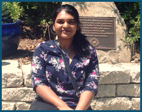

Welcome!
Hello! I am a PhD student at the University of Southern California. I work in the Interaction Lab, where I research Socially Assistive Robotics, under the advisement of Maja Mataric.
I graduated from the University of Nevada, Reno (UNR) with a Bachelor's degree in Computer Science in 2013. At UNR, I worked with Monica Nicolescu in the Robotics Lab on robot localization. Before that, I worked with Kostas Bekris and the PRACSYS group on Motion Planning.
My primary research interest is in development of robot personalities for the purpose of empowering users with the ability to predict robot behavior given the personality they perceive from the robot. I am currently supported by the National Physical Science Consortium (NPSC) fellowship.